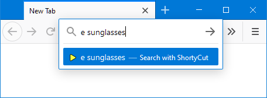

ShortyCut
ShortyCut is a JavaScript application to quickly navigate to websites using keywords. Unlike browser bookmarks, the links and keywords are stored as plain text in a simple file:
shortycut.addShortcuts(`
[e] Search eBay https://www.ebay.com.au/sch/i.html?nkw=%s
[ta] The Age https://www.theage.com.au/melbourne-news
[tc] TechCrunch https://techcrunch.com
[tg] Typing Games https://www.typing.com/student/game/type-a-balloon
[tr] Translate https://dict.leo.org/ende?lp=ende&lang=de&search=%s
[tvg] TV Guide https://www.yourtv.com.au/guide/
`);
Links are opened by entering the corresponding keyword (for example ta or tr). Using ShortyCut's homepage is the easiest way to do this. It works in all browsers and provides suggestions while typing:

ShortyCut can also be set up as the browser's default search engine. This way, keywords can be entered directly in the address bar:

ShortyCut makes keywords available in all browsers, including those that don't natively support it. It enhances their capabilities with additional features like keywords with multiple links, support for POST pages, and the ability to dynamically generate shortcuts via JavaScript.
Resources
Visit the GitHub project page:
https://github.com/david-04/shortycut
Download the latest release:
https://github.com/david-04/shortycut/releases
View the latest release notes:
https://david-04.github.io/shortycut/release-notes.html